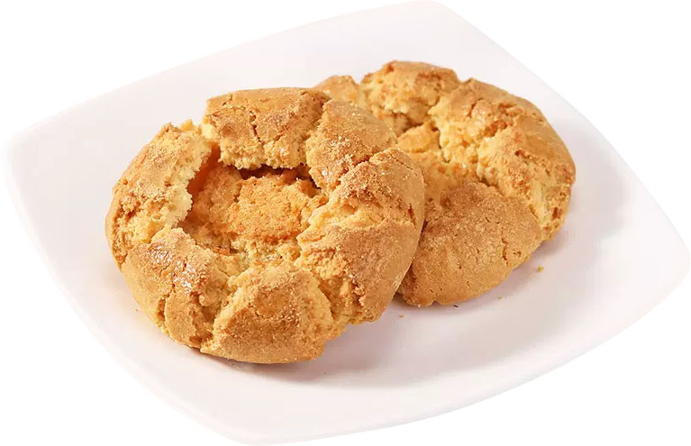
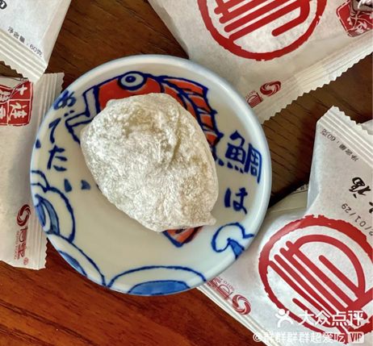

NEW ARRIVAL
新品推荐
LEARN MORE
 红豆大福雪梅娘
红豆大福雪梅娘
SOTO FOOD 脆条江米条老式雪花条
脆条江米条老式雪花条
SOTO FOOD 蓝莓酥软曲奇饼干
蓝莓酥软曲奇饼干
SOTO FOOD- 核桃酥
SOTO FOOD
ABOUT US
走进寿童
LEARN MORE
老味道风靡大连三十年
大连寿童食品有限公司成立于1992年，寿童食品技术来自于东瀛，融入中国的传统元素，历经二十年潜心研制，主要产品有日式糕点系列、
大连寿童食品有限公司成立于1992年，寿童食品技术来自于东瀛，融入中国的传统元素，历经二十年潜心研制，主要产品有日式糕点系列、
- 1922
企业成立时间
- 30+
糕点生产销量经验
- 10+
专利数量
- 30+
合作商超
BRAND INFORMATION
品牌咨询
2022-10-15
辽宁大连月饼抽检结果出炉！选项月饼“四注意”
查看更多>

2022-10-15
辽宁大连月饼抽检结果出炉！选项月饼“四注意”
查看更多>

2022-10-15
辽宁大连月饼抽检结果出炉！选项月饼“四注意”
查看更多>
- 
2022-10-15
辽宁大连月饼抽检结果出炉！选项月饼“四注意”
查看更多>
LEARN MORE
CONTACT US
联系我们
大连寿童食品有限公司(总部)
客服电话：
400-000-0000
地址 :
辽宁省大连市金州区汉正路16-4号

微信官方图片
微信官方图片
微信官方图片
微信官方图片